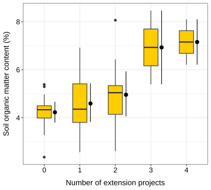

![]()
Show me the code
library(readxl)
library(tidyverse)In this tutorial, you will learn how to use contrasts to examine differences among groups based on specific, hypothesis-driven comparisons. Instead of relying on post hoc tests that evaluate all possible pairwise differences, you will learn how to formulate and test targeted contrasts that address particular research questions. You will also explore polynomial contrasts to detect patterns and trends in the data, such as linear or quadratic relationships. In addition, you will extend your understanding of ANOVA by learning how to analyze experiments with two independent variables using two-way ANOVA. You will interpret main effects and interactions, and understand how multiple factors jointly influence a response variable.
Let’s get started!

To work on this tutorial, you will need to load the readxl and tidyverse packages.
library(readxl)
library(tidyverse)Start by importing the data used in this course (see previous tutorials).
#Option 1 (csv file)
data <- read_csv("gss_statistics_master_data_set2.csv")
#Option 2 (Excel file)
data <- read_excel("gss_statistics_master_data_set2.xlsx")Contrasts are used to test specific, hypothesis-driven differences among group means. Rather than comparing all possible pairs of groups (like in a post hoc test), contrasts allow us to compare one mean to another mean, or one group of means to another group of means, based on a clearly defined research question.
To illustrate how contrasts work, let’s focus on the same research question as in the previous tutorial:
Is soil organic matter content different among agroecological, conventional, and large-scale farms?
This time, let’s be more specific about the hypotheses we want to test and comparisons we want to make:
Hypothesis 1: We expect soil organic matter content to be higher in agroecological farms than in conventional and large-scale farms.
Hypothesis 2: We expect soil organic matter content to be higher in large-scale farms than in conventional farms.
For each research hypothesis (1 and 2), formulate a null hypothesis.
Null hypothesis 1: there is no difference in soil organic matter content between agroecological farms and other farms (conventional and large-scale farms).
Null hypothesis 2: there is no difference in soil organic matter content between large-scale and conventional farms.
In R, contrasts are specified using contrast coefficients that define how group means are compared. When setting up contrast coefficients for a particular comparison, four key rules should be followed:
Treatments that are grouped together receive the same sign (either positive or negative).
Groups of means that are being contrasted against each other receive opposite signs.
Factor levels that are not included in the comparison are assigned a coefficient of zero.
The sum of all contrast coefficients must equal zero.
Our dataset contains data for three types of farm: agroecological (eco), conventional (con), and large-scale (large). The farm_type variable is a factor with three levels.
Choose contrast coefficients to test the hypothesis that soil organic matter content is higher in agroecological farms than in conventional and large-scale farms. Here, we want to compare eco farms against the combined mean of con and large farms.
| Eco | Con | Large |
|---|---|---|
| ? | ? | ? |
According to the rules for setting contrast coefficients, the two farm types that are lumped together (con and large) must receive the same sign, while the group they are contrasted with (eco) must receive the opposite sign. Because all three farm types are included in this comparison, none of them receive a coefficient of zero. Finally, the coefficients must sum to zero. A suitable set of contrast coefficients is therefore eco = +2, con = –1, and large = –1. Eco receives the opposite sign from the other two farm types, con and large share the same sign because they are grouped together, and the coefficients sum to zero (2 – 1 – 1 = 0). Note that this is only one option among many.
| Eco | Con | Large |
|---|---|---|
| +2 | -1 | -1 |
Choose contrast coefficients to test the hypothesis that soil organic matter content is higher in large-scale farms than in conventional farms. Here, we want to compare large farms against con farms. eco farms are not considered here.
| Eco | Con | Large |
|---|---|---|
| ? | ? | ? |
Following the rules to set contrast coefficients, the two farm types being contrasted (large and con) must receive opposite signs, and the excluded group (eco) must receive a coefficient of zero. The coefficients must again sum to zero. A suitable set of contrast coefficients is eco = 0, con = –1, and large = +1. eco is excluded from the comparison, large and con receive opposite signs, and the coefficients sum to zero (0 – 1 + 1 = 0). Note that this is only one option among many.
| Eco | Con | Large |
|---|---|---|
| 0 | -1 | +1 |
Now that we have defined the contrast coefficients for each hypothesis, we can combine them into a contrast matrix and rerun the one-way ANOVA to examine how farm type affects soil organic matter content under these specified comparisons.
farm_type variable into a factor using as.factor().farm_type factor using the function levels().c1 and c2, which contain contrast coefficients for hypotheses 1 and 2, respectively. Make sure to enter the contrast coefficients in the alphabetical order of the three factor levels, that is, con first, followed by eco, and then large.c1 and c2 into a contrast matrix called contrast.matrix using cbind(c1, c2), where each column represents one contrast.farm_type by assigning this matrix to contrasts(data$farm_type).farm_type) on soil organic matter content (SOM). See Exercise 8 of the previous tutorial if you do not remember how to do this. Show the ANOVA table using summary().data$farm_type <- as.factor(data$farm_type)levels(data$farm_type)[1] "con" "eco" "large"#For hypothesis 1
c1 <- c(-1, 2, -1)
#For hypothesis 2
c2 <- c(-1, 0, 1)contrast.matrix <- cbind(c1, c2)contrasts(data$farm_type) <- contrast.matrix#Fit ANOVA model
model <- aov(SOM ~ farm_type,
data = data)
#Show ANOVA table
summary(model) Df Sum Sq Mean Sq F value Pr(>F)
farm_type 2 37.18 18.589 15 2.32e-05 ***
Residuals 33 40.89 1.239
---
Signif. codes: 0 '***' 0.001 '**' 0.01 '*' 0.05 '.' 0.1 ' ' 1To break down the effect of the factor farm_type into the individual contrasts that we previously defined, we need to use the split argument in the summary() function used to display the ANOVA table. This would look like this:
summary(model, split=list(farm_type=list("Eco vs. Con and Large"=1, "Con vs. Large" = 2)))
Using the split argument, we specify that the factor farm_type should be divided into two components. The first contrast (column 1 of the contrast matrix) is labeled "Eco vs. Con and Large", and the second contrast (column 2) is labeled "Con vs. Large". The numbers 1 and 2 refer to the first and second contrast columns in the contrast matrix.
summary() function on the ANOVA object using the split argument (see above for R code).summary(model,
split=list(farm_type=list("Eco vs. Con and Large"=1,
"Con vs. Large" = 2))) Df Sum Sq Mean Sq F value Pr(>F)
farm_type 2 37.18 18.59 15.002 2.32e-05 ***
farm_type: Eco vs. Con and Large 1 37.12 37.12 29.960 4.56e-06 ***
farm_type: Con vs. Large 1 0.05 0.05 0.044 0.836
Residuals 33 40.89 1.24
---
Signif. codes: 0 '***' 0.001 '**' 0.01 '*' 0.05 '.' 0.1 ' ' 1Hypothesis 1: The p-value (4.56e-06) is much lower then the significance threshold (0.05). Therefore, we reject the null hypothesis that there is no difference in soil organic matter content between agroecological farms and other farms (conventional and large-scale farms). We conclude that soil organic matter content in agroecological farms is significantly different from that in conventional and large-scale farms.
Hypothesis 2: The p-value (0.836) is much larger than the significance threshold (0.05). Therefore, we fail to reject the null hypothesis that there is no difference in soil organic matter content between large-scale and conventional farms. We conclude that soil organic matter contents in conventional and large-scale farms are not significantly different from each other.
Polynomial contrasts are used to test for specific trends or patterns in a response variable across ordered levels of a factor. They are particularly useful when the predictor is an ordinal variable. For example, they can examine whether a response increases or decreases linearly, or whether it follows a more complex, curved (quadratic or cubic) pattern.
To illustrate polynomial contrasts, let’s focus on the relationship between soil organic matter content (SOM) and the number of projects accessed (n_ext_projects variable). The n_ext_projects variable is a discrete variable going from 0 to 4.
n_ext_projects variable to a factor using as.factor().contr.poly(). To use this function, you just need to specify the number of levels (n) that your factor has (in our case, n_ext_projects has 5 levels). Store the contract coefficients into an object called contrast.matrix.poly. The contrast coefficients created by contr.poly() are designed to test linear, quadratic, and higher-order trends.n_ext_projects by assigning this matrix to contrasts(data$n_ext_projects).n_ext_projects) on soil organic matter content (SOM). Show the ANOVA table using summary().summary() function on the ANOVA object using the split argument. We are only interested in examining the results for the first two trend components (linear and quadratic). Linear contrasts are stored in the first column of contrast.matrix.poly, while quadratic contrasts are stored in the second column.data$n_ext_projects <- as.factor(data$n_ext_projects)contrast.matrix.poly <- contr.poly(n=5)contrasts(data$n_ext_projects) <- contrast.matrix.poly#Fit ANOVA model
model <- aov(SOM ~ n_ext_projects,
data = data)
#Show ANOVA table
summary(model) Df Sum Sq Mean Sq F value Pr(>F)
n_ext_projects 4 25.02 6.256 3.656 0.0149 *
Residuals 31 53.05 1.711
---
Signif. codes: 0 '***' 0.001 '**' 0.01 '*' 0.05 '.' 0.1 ' ' 1summary(model,
split=list(n_ext_projects=list("Linear"=1,
"Quadratic" = 2))) Df Sum Sq Mean Sq F value Pr(>F)
n_ext_projects 4 25.02 6.256 3.656 0.0149 *
n_ext_projects: Linear 1 20.75 20.745 12.124 0.0015 **
n_ext_projects: Quadratic 1 2.40 2.401 1.403 0.2452
Residuals 31 53.05 1.711
---
Signif. codes: 0 '***' 0.001 '**' 0.01 '*' 0.05 '.' 0.1 ' ' 1There is a significant linear trend between the number of extension projects and soil organic matter content (F(1,31)=12.124; p-value = 0.0015). The quadratic trend, however, is not significant (F(1,31)=1.403; p-value = 0.2452).
